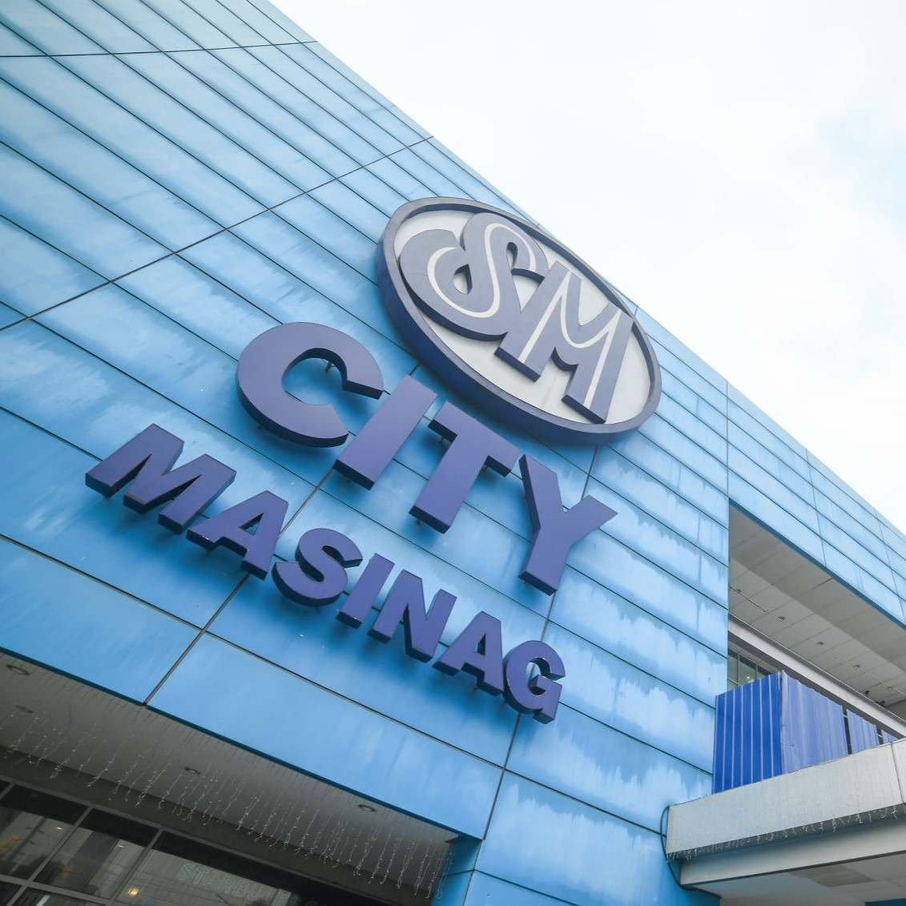
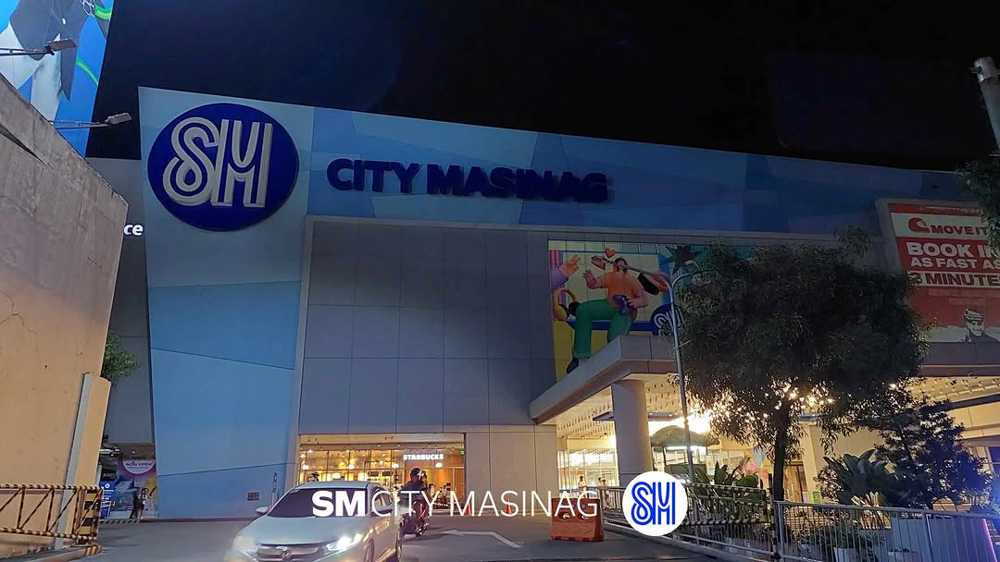
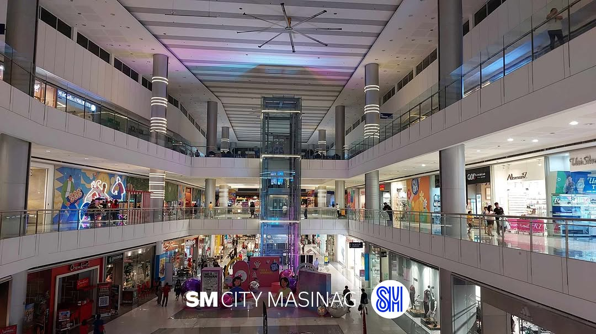

| Name | LAUZON, FRANCES NICOLE F. | Topic | HTML & CSS |
| Activity No. | Hands-on Quiz 1 | Date | Jan 21, 2026 |

OVERVIEW

SM City Masinag is a shopping mall located along Marcos Highway, Antipolo City, Philippines. This is the only Philippine SM Supermall branch to be opened by the company in 2011 and the second SM Supermall to be opened in the Province of Rizal after SM City Taytay.
SM Supermalls is one of Southeast Asia’s biggest developers and the operator of 88 malls in the Philippines, and 8 malls in China. With an average foot traffic of 4.2 million daily in the Philippines, 300,000 in China and over 20,000 tenant partners, SM Supermalls provides family fun experiences as it partners with the best-loved brands and events. SM Supermalls is owned by SM Prime Holdings, Inc., a publicly-listed company and is one of the largest integrated property developers in Southeast Asia.
HISTORY

SM began in 1958 when Henry Sy Sr. opened the first ShoeMart store. The company later grew beyond retail, and in 1985, SM City North EDSA opened and introduced a new shopping mall concept in the Philippines. In 1994, SM Prime Holdings, Inc. was formed and listed on the Philippine Stock Exchange, which helped the company expand across the country. Over time, SM Prime also developed homes, offices, hotels, convention centers, and mixed-use projects, including well-known places like SM Mall of Asia and certain hotels in Tagaytay. Today, SM Prime is one of the leading property developers in Southeast Asia.
WHY IS THIS MY FAVORITE PLACE?
This place may be just a mall to many people, but for me, it has become part of my everyday life. I spend time here almost daily. On my way to school, I park my car here and access the LRT station. On my way home, I return here to unwind, relax, and sometimes grab a meal before heading back. I also have many memories of spending time here with my friends, whether we are hanging out or eating together. This is also where I do most of my shopping, since it offers far more choices than the other malls near my home.